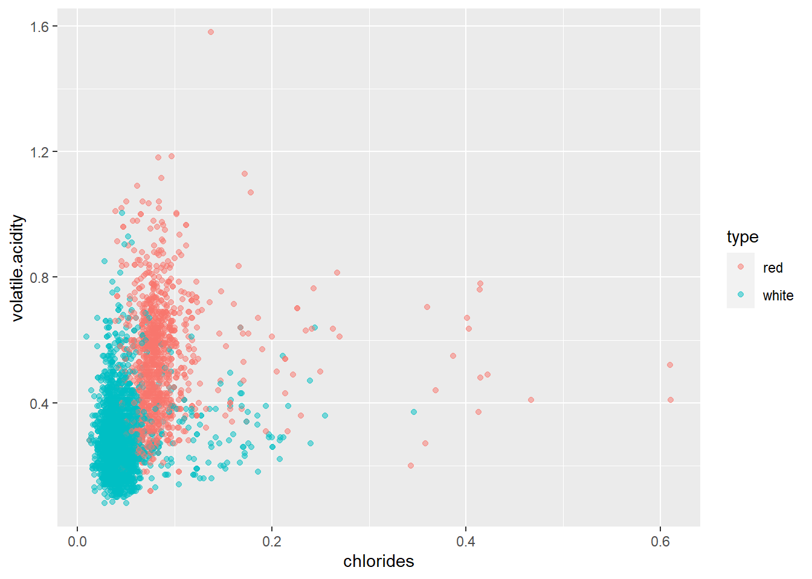

16 Uvod u prediktivno modeliranje
16.1 Što je prediktivno modeliranje?
U prethodnom poglavlju prikazali smo kako uz pomoć linearne regresije možemo istražiti i modelirati međuodnos dvaju (ili više) varijabli. Ukoliko postoji kolinearnost između dvije promatrane varijable, onda se njihov odnos može modelirati uz pomoć jednostavne jednadžbe pravca, koja potom omogućuje da iz poznate vrijednosti jedne od varijabli pokušamo procijeniti vrijednost druge varijable. Ovo je osnovna ideja tzv. “prediktivnog modeliranja” - postupak kojim na osnovu poznatih ulaza i razvijenih prediktivnih modela dobivamo informaciju o nepoznatim izlazima, tj. ciljevima. Što su modeli bolji, to je naše “pogađanje” nepoznatih izlaza kvalitetnije. Ili, kako to definiraju Kuhn i Johnson u svojoj knjizi “Applied Predictive Modelling”:
Prediktivno modeliranje je proces razvoja matematičkog alata ili modela koji je u mogućnosti stvoriti točne predikcije.
Prediktivno modeliranje ima brojne mogućnosti uporabe u raznim domenama npr.:
- predviđanje količine prodanih proizvoda ili profita
- identifikacija korisnika koji planiraju otkazati pretplatu
- dijagnostika bolesti
- procjena vrijednosti nekretnine
- predviđanje gledanosti filma na prvi vikend prikazivanja
- detekcija spama u elektroničkoj pošti
- itd.
Kod razvoja prediktivnih modela jako je važno:
- imati kvalitetne i adekvatno pripremljene podatke
- odabrati prikladnu metodu za stvaranje modela
- ispravno provesti proces evaluacije i validacije modela
Uloga analitičara u ovom procesu jest da kvalitetno provede sve korake analize te izbjegne sve potencijalne zamke i pogreške koje se tu mogu pronaći. Naime, prediktivni modeli mogu u konačnici imati loše performanse iz niza razloga - loše pripremljeni podaci, loše provedena validacija, primjena modela na neadekvatnom skupu, izrada modela koji nemaju sposobnost generalizacije itd.
U ovom poglavlju upoznati ćemo se sa nekim osnovnim smjernicama kojih se moramo pridržavati tijekom prediktivnog modeliranja. Također ćemo se upoznati sa paketima jezika R koji omogućuju da mnoge složene korake prepustimo računalu, tj. da pristupimo modeliranju sa visoke razine apstrakcije dok računalo samostalno obavlja niskorazinske korake pripreme podataka, modeliranja i validacije.
16.2 Podaci za treniranje i testiranje modela
Kada smo u prethodnom poglavlju stvarali linearne modele koji su mapirali ulaze u izlaz, tj. “prediktore” u “ciljnu varijablu”, nakon stvaranja modela smo uz pomoć funkcije summary gledali sažete informacije o modelu - procjenu povezanosti prediktora i cilja, prosječnu standardnu grešku kod predviđanja, mjeru R-kvadrat koja procjenjuje objašnjenu varijabilnost itd. Ove informacije omogućile su nam evaluaciju kvalitete razvijenih modela.
No u cijelom ovom procesu zanemarili smo jednu ključnu stvar - sve ove informacije ticale su se podataka korištenih za stvaranje samog modela. Drugim riječima, dobili smo uvid koliko dobro model radi nad poznatim podacima, tj. podacima koje je model već vidio tijekom stvaranja modela. U pravilu nam je puno važnije procijeniti koliko dobro model radi nad nepoznatim podacima, tj. kakva će biti kvaliteta predikcija jednom kad model dobije nove podatke. Kažemo da želimo modele koji dobro generaliziraju, tj. modele koji su dobro naučili neke općenite karakteristike entiteta iz domene opisanih dobivenim podacima, a ne samo specifičnosti skupa podataka korištenih za razvijanje samog modela. Ovu potonju pojavu zovemo “prenaučenost” (engl. overfitting).
Vrlo često u trenutku stvaranja modela imamo samo jedan podatkovni skup kojeg bismo trebali koristiti i za treniranje i za evaluaciju modela. Kao što smo već rekli, korištenje istih podataka u obje svrhe ne daje nam dovoljno dobru informaciju o tome kako model generalizira. Zbog toga je uobičajena procedura da inicijalni skup dijelimo na dva dijela - skup za treniranje i skup za testiranje.
Kako odlučiti koje opservacije pridijeliti kojem skupu? Koliko opservacija staviti u jedan, a koliko u drugi skup? U pravilu bi i skup za treniranje i skup za testiranje trebali imati dovoljan broj opservacija kako bi dobiveni rezultati mogli biti statistički relevantni, tako da bi uz pretpostavku dovoljno velikog skupa podjela na dva jednaka dijela mogla biti zadovoljavajuće rješenje. Ipak, u praksi se najčešće nešto više opservacija ostavlja za treniranje nego za testiranje, tako da je uobičajeno skup rezati prema omjeru 70 : 30, tj. 70% opservacija staviti u skup za treniranje, a ostatak u skup za testiranje.
Što se postupka odabira opservacija (tj. “uzorkovanja”) tiče, postoji nekoliko uobičajenih postupaka:
- nasumični odabir
- stratificirani nasumični odabir (osiguravanje jednake zastupljenosti određenih kategorija u oba skupa)
- odabir prema vremenskoj oznaci (ako nam je vremenska komponenta ključna, tj. bitno nam je procijeniti koliko dobro podaci iz prošlosti predviđaju događaje iz budućnosti)
Nasumični odabir je uobičajena metoda, a sofisticiraniju metodu uzorkovanja možemo odabrati ako za to postoji jasna potreba.
Pokušajmo sada primjeniti ova saznanja na razvoju modela linearne regresije pri čemu ćemu usporediti njegovu učinkovitost nad trening skupom, a potom nad testnim podacima. Za ovo ćemo se poslužiti novim skupom podataka vezanim uz karakteristike i kvalitetu vina, wines.csv. Ovaj skup nastao je prilagodbom skupa “Wine Quality Data Set” sa portala “UCI Machine Learning Repository”, dostupnom na ovoj poveznici.
U sljedećem zadatku učitati ćemo ovaj skup te napraviti neke prilagodbe - kategorizirati ćemo stupce koji očito sadržavaju kategorijsku varijablu te izbaciti retke sa nedostajućim vrijednostima. Retci sa nedostajućim vrijednostima često zahtijevaju malo više pažnje te sofisticiraniji pristup od jednostavnog uklanjanja, pogotovo kod veće količine nedostajućih vrijednosti ili potencijalnih dodatnih informacija koje te vrijednosti donose. No u našem slučaju ovakvih redaka je iznimno malo, a kod primjene određenih metoda prediktivnog modeliranja mogu stvarati probleme, tako da ćemo ih jednostavno ukloniti. Jedan od brzih načina kako ovo provesti je korištenje funkcije complete.cases, koja za dani podatkovni okvir vraća indekse svih redaka koji nemaju niti jednu nedostajuću vrijednost.
Zadatak 16.1 - skup wine quality
# u varijablu `wine` učitajte podatke iz datoteke `wines.csv`
# proučite učitani podatkovni okvir
# kategorizirajte stupce prema potrebi
# i uklonite retke sa nedostajućim vrijednostima ako ih ima# u varijablu `wine` učitajte podatke iz datoteke `wines.csv`
# proučite učitani podatkovni okvir
# i kategorizirajte stupce prema potrebi
# i uklonite retke sa nedostajućim vrijednostima ako ih ima
wine <- read.csv("wines.csv", stringsAsFactors = F, encoding = "UTF-8")
glimpse(wine)
wine$type <- factor(wine$type)
wine <- wine[complete.cases(wine),]## Rows: 6,497
## Columns: 13
## $ fixed.acidity <dbl> 7.4, 7.8, 7.8, 11.2, 7.4, 7.4, 7.9, 7.3, 7.8, 7.5…
## $ volatile.acidity <dbl> 0.700, 0.880, 0.760, 0.280, 0.700, 0.660, 0.600, …
## $ citric.acid <dbl> 0.00, 0.00, 0.04, 0.56, 0.00, 0.00, 0.06, 0.00, 0…
## $ residual.sugar <dbl> 1.9, 2.6, 2.3, 1.9, 1.9, 1.8, 1.6, 1.2, 2.0, 6.1,…
## $ chlorides <dbl> 0.076, 0.098, 0.092, 0.075, 0.076, 0.075, 0.069, …
## $ free.sulfur.dioxide <dbl> 11, 25, 15, 17, 11, 13, 15, 15, 9, 17, 15, 17, 16…
## $ total.sulfur.dioxide <dbl> 34, 67, 54, 60, 34, 40, 59, 21, 18, 102, 65, 102,…
## $ density <dbl> 0.9978, 0.9968, 0.9970, 0.9980, 0.9978, 0.9978, 0…
## $ pH <dbl> 3.51, 3.20, 3.26, 3.16, 3.51, 3.51, 3.30, 3.39, 3…
## $ sulphates <dbl> 0.56, 0.68, 0.65, 0.58, 0.56, 0.56, 0.46, 0.47, 0…
## $ alcohol <dbl> 9.4, 9.8, 9.8, 9.8, 9.4, 9.4, 9.4, 10.0, 9.5, 10.…
## $ quality <int> 5, 5, 5, 6, 5, 5, 5, 7, 7, 5, 5, 5, 5, 5, 5, 5, 7…
## $ type <chr> "red", "red", "red", "red", "red", "red", "red", …Pretpostavimo da je atribut quality ciljna varijabla, a svi ostali stupci potencijalni prediktori.
Kako rastaviti ovaj skup nasumičnim odabirom na skup za treniranje i skup za testiranje? Postoji više načina kako ovo provesti, pa čak i specijaliziranih funkcija i paketa za ovu svrhu, no mi ćemo naučiti jednostavno i lako razumljivu metodu koja koristi funkciju sample. Ako prepostavimo da je df podatkovni okvir koje želimo rastaviti na trening i test skup koje ćemo pohraniti u varijable df.train i df.test, onda rastavljanje nasumičnim odabirom možemo provesti ovako:
train_size <- 0.7 * nrow(df) %>% round # otprilike 70%
train_ind <- sample(1:nrow(df), train_size) # indeksi trening opservacija
df.train <- df[train_ind, ]
df.test <- df[-train_ind, ]Primjenimo to na našem podakovnom skupu o vinima, a potom istrenirajmo model linearne regresije na trening skupu.
Zadatak 16.2 - Rezanje ulaznog skupa i treniranje modela
set.seed(1234)
# rastavite podatkovni okvir `wine` na `wine.train` i `wine.test`
# metodom nasumičnog odabira prema omjeru 70:30
# istrenirajte model linearne regresije `linMod` nad skupom `wine.train`
# ciljna varijabla je `quality` a sve ostale prediktori
# proučite sažetak dobivenog modela# istrenirajte model linearne regresije `linMod` nad skupom `wine.train`
# ciljna varijabla je `quality` a sve ostale prediktori
# proučite sažetak dobivenog modela
linMod <- lm(quality ~ ., data = wine.train)
summary(linMod)##
## Call:
## lm(formula = quality ~ ., data = wine.train)
##
## Residuals:
## Min 1Q Median 3Q Max
## -3.6077 -0.4616 -0.0409 0.4637 3.0352
##
## Coefficients:
## Estimate Std. Error t value Pr(>|t|)
## (Intercept) 1.226e+02 1.846e+01 6.643 3.44e-11 ***
## fixed.acidity 9.438e-02 1.955e-02 4.828 1.42e-06 ***
## volatile.acidity -1.600e+00 9.558e-02 -16.736 < 2e-16 ***
## citric.acid -1.373e-01 9.414e-02 -1.459 0.144664
## residual.sugar 6.943e-02 7.438e-03 9.335 < 2e-16 ***
## chlorides -6.106e-01 3.887e-01 -1.571 0.116274
## free.sulfur.dioxide 5.488e-03 9.148e-04 5.999 2.14e-09 ***
## total.sulfur.dioxide -1.340e-03 3.805e-04 -3.522 0.000432 ***
## density -1.218e+02 1.871e+01 -6.513 8.18e-11 ***
## pH 5.275e-01 1.106e-01 4.770 1.90e-06 ***
## sulphates 7.499e-01 9.096e-02 8.244 < 2e-16 ***
## alcohol 2.069e-01 2.335e-02 8.859 < 2e-16 ***
## typewhite -4.546e-01 6.927e-02 -6.563 5.87e-11 ***
## ---
## Signif. codes: 0 '***' 0.001 '**' 0.01 '*' 0.05 '.' 0.1 ' ' 1
##
## Residual standard error: 0.7292 on 4533 degrees of freedom
## Multiple R-squared: 0.3106, Adjusted R-squared: 0.3088
## F-statistic: 170.2 on 12 and 4533 DF, p-value: < 2.2e-16Vidimo da je prilagođena R-kvadrat mjera relativno niska a prosječna greška dosta visoka, tako da je moguće da linearna regresija nije previše dobar odabir za ovaj scenarij (ili dobivene karakteristike vina jednostavno nisu dovoljno dobre za predviđanje njegove kvalitete). Usprkos tome, provjerimo koliko dobro model generalizira, tj. koliko dobro “pogađamo” kvalitetu na testnom skupu opservacija.
Kako bismo provjerili kvalitetu našeg modela, moramo odabrati kriterij prema kojemu ćemo se ravnati. Kod pogađanja numeričkih vrijednosti često se koristi tzv. RMSE (engl. root mean square error). Konkretno, za svaki opservaciju izračunamo pogrešku (rezidual), kvadriramo i sumiramo sve pogreške, potom podijelimo sa brojem opservacija i korjenujemo konačni rezultat:
\[RMSE = \sqrt{\frac{\sum_{i = 1}^{n}(\widehat{y}_{i} - y_{i})^2}{n}}\]
gdje je n broj opservacija, \(\widehat{y}_{i}\) predikcija i-te opservacije a \(y_{i}\) stvarna vrijednost ciljne varijable te opservacije.
Alternativa ovoj mjeri je MAE (engl. mean absolute error), koja se računa na sljedeći način:
\[MAE = \frac{\sum_{i = 1}^{n}|\widehat{y}_{i} - y_{i}|}{n}\]
Mjera MAE je ponešto intuitivnija, ali i matematički složenija kod provođenja optimizacijskih funkcija. Isto tako, RMSE mjeri dajemo prednost kada želimo jače penalizirati veće pogreške.
Iako postoje paketi koji sadrže funkcije za izračun ovih mjera, možemo ih vrlo jednostavno i samostalno isprogramirati. U nastavku ćemo se usredotočiti na mjeru RMSE, a mjeru MAE ostavljmo za vježbu.
Zadatak 16.3 - Funkcija za računanje RMSE mjere
# stvorite funkciju `rmse` koja će za zadane vektore `pred` i `stv`
# izračunati RMSE mjeru prema gornjoj formuliDodajmo sada skupovima wine.train i wine.test stupac koji će sadržavati predikcije dobivene našim modelom linearne regresije, a potom izračunajmo vrijednost RMSE mjere nad jednim i drugim skupom.
Zadatak 16.4 - Evaluacija modela na trening i test skupu
# uz pomoć funkcije `predict` i modela `linMod`
# skupovima `wine.train` i `wine.test` dodajte stupac `predQualityLR`
# koji će sadržavati predikciju kvalitete vina
# ispišite vrijednost RMSE mjere za jedan i drugi skup
# uklonite stupac `predQualityLR` iz skupa `wine.train`# uz pomoć funkcije `predict` i modela `linMod`
# skupovima `wine.train` i `wine.test` dodajte stupac `predQualityLR`
# koji će sadržavati predikciju kvalitete vina
wine.train$predQualityLR <- predict(linMod, wine.train)
wine.test$predQualityLR <- predict(linMod, wine.test)
# ispišite vrijednost RMSE mjere za jedan i drugi skup
rmse(wine.train$predQualityLR, wine.train$quality)
rmse(wine.test$predQualityLR, wine.test$quality)
# uklonite stupac `predQualityLR` iz skupa `wine.train`
wine.train$predQualityLR <- NULL## [1] 0.7281868
## [1] 0.7435729Vidimo da RMSE za trening skup otprilike odgovara rezidualnoj standardnoj grešci dobivenoj u sažetku modela (mala razlika očituje se u tome što smo mi dijelili sa ukupnim brojem opservacija, dok je kod izračuna rezidualne standardne greške korišten broj stupnjeva sloboda, tj. broj opservacija umanjen za broj “zavisnih” varijabli, tj. prediktora). Ono što nam je interesantno jest činjenica da vrijednost RMSE mjere testnog skupa nije dramatično različita od RMSE mjere, što znači da model gotovo jednako dobro (ili loše) radi i nad novim podacima.
16.3 Klasifikacijski prediktivni modeli - kNN klasifikacija
Metoda linearne regresije omogućila nam je “pogađanje” numeričke ciljne varijable. Opravdano je postaviti pitanje - možemo li razviti prediktivni model koji će pokušati pogoditi vrijednost kategorijske varijable? Ovo je iznimno važan segment prediktivnog modeliranja, budući da se u mnogim domenama pojavljuju problemi vezani uz određivanje vrijednosti neke kategorije (pacijent je bolestan ili nije, uređaj je pokvaren ili ispravan, transakcija je regularna ili rezultat prijevare, klijent banke je sposoban vratiti kredit ili ne i sl.)
Ovo je tzv. “klasifikacijski” problem za kojeg - kao i za “regresijski”, tj. pogađanje numeričkih vrijednosti - postoji iznimno veliki skup razvijenih metoda. Vrlo često se slične metode mogu koristiti i za jednu i drugu svrhu (nekad uz određene prilagodbe), pa tako iako linearna regresija nije napodobnija za klasifikacijske probleme, njoj srodna “logistička regresija” predstavlja vrlo učinkoviti i popularni pristup takvom tipu problema.
U ovom dijelu usredotočiti ćemo se na jednu drugu, također vrlo popularnu klasifikacijsku metodu, čiji način rada je vrlo intuitivan i lako objašnjiv, ali koja omogućuje uvid u niz zanimljivih elemenata prediktivnog modeliranja koje do sada nismo spominjali. Radi se o metodi “k najbližih susjeda”, ili “kNN klasifikaciji” (engl. K nearest neighbours).
Ova metoda radi na vrlo jednostavan način. Ako ne znamo kategoriju neke opservacije, jednostavno pronađemo određeni broj opservacija “najbližih” toj novoj opservaciji, pogledamo njihove kategorije i potom većinskim glasovanjem odredimo koju kategoriju pridijeliti novoj opservaciji. Pokušajmo ovo vizualizirati.
Zadatak 16.5 - Vizualizacija ideje metode kNN klasifikacije
# nacrtajte točkasti graf skupa `wine.train`
# postavite `chlorides` na os x
# i `volatile.acidity` na os y
# točke obojajte prema tipu vina
# postavite prozirnost točaka na 0.5# nacrtajte točkasti graf skupa `wine.train`
# postavite `chlorides` na os x
# i `volatile.acidity` na os y
# točke obojajte prema tipu vina
# postavite prozirnost točaka na 0.5
ggplot(wine.train, aes(chlorides, volatile.acidity, col = type)) + geom_point(alpha = 0.5)
Na grafu možemo jasno vidjeti kako točke formiraju “grozdove” istih boja na određenim područjima. Ako bismo uzeli novu opservaciju vezanu uz vino nepoznatog tipa, ali poznatih vrijednosti mjera postavljenih na osi x i y grafa, gledanjem njenog neposrednog susjedstva mogli bismo zaključiti o kojem se tipu vina radi. Opservacija koja se nalazi duboko unutar jednog od “oblaka” vrlo vjerojatno pripada prikazanom tipu (iako vidimo da ima iznimaka!). S druge strane, opservacija koja se nalazi unutar “graničnih” područja ima puno veću vjerojatnost da će biti pogrešno klasificirana, a različit odabir broja susjeda mogao bi rezultirati različiti rezultatom klasifikacije.
kNN klasifikacija zasniva se na konceptu udaljenosti. Iako postoje različite opcije za odabir udaljenosti, često se oslanjamo na tzv. “Euklidsku udaljenost”, koju u dvo- i trodimenzionalnom kartezijevom sustavu vrlo lako predočimo najkraćim putem između dvije točke, a samu vrijednost računamo uz pomoć njihovih koordinata i Pitagorinog teorema. Ova udaljenost lako se primjenjuje na n-dimenzionalne prostore, tako da iako ne možemo lako predočiti točke u prostoru čija dimenzija odgovara broju prediktora, i dalje možemo lako izračunati vrijednost Euklidske udaljenosti između točaka.
Dakle, način rada kNN klasifikacije možemo jednostavno opisati ovako:
- skup za treniranje sam za sebe zapravo predstavlja “znanje o sustavu” tj. sam prediktivni model
- za svaku novu opservaciju pronalazimo k najbližih opservacija iz trening skupa i pridjelimo joj kategoriju odabranu većinskim glasovanjem
Iako ovo djeluje jednostavno, postoje neka otvorena pitanja. Prvo - kako odabrati parametar k? Drugo, nešto manje očito je pitanje da li moramo obaviti neke dodatne pripremne radnje nad podatkovnim skupom prije nego isprobamo kNN klasifikaciju?
Pozabavimo se prvo ovim drugim problemom. Pogledajmo još jednom graf koji smo nacrtali, točnije njegove koordinatne osi. Možemo uvidjeti da duljine na osima ne odgovaraju nužno numeričkim vrijednostima, tj. jedinični interval na osi x nije nužno jednak jediničnom intervalu na osi y. Ovo je normalno i očekivano, budući da vrijednosti na osima ne moraju nužno koristiti istu mjernu skalu, pa čak ni mjernu jedinicu. No tu se krije jedan problem - kad računamo Euklidsku udaljenost ona će sve osi tretirati jednako, što znači da će one varijable sa većim rasponima automatski dobivati veću važnost (npr. maksimalna vrijednost varijable chlorides kreće se oko 0.611, dok varijabla total.sulfur.dioxide dostiže 440!)
Ovdje vidimo važnost pretprocesiranja podataka. Kod kNN klasifikacije preporučuje se normalizacija numeričkih varijabli, tj. transformacija numeričkih varijabli na način da od njih oduzmemo njihov prosjek i podijelimo ih sa standardnom devijacijom, čime ih sve svodimo na istu skalu. Ovaj postupak je nešto kompleksniji nego što se čini, jer moramo voditi računa da nove opservacije budu normalizirane na isti način. Ako imamo dovoljno podataka i reprezentativne trening i test skupove, onda bi njihovi prosjeci i standardne devijacije trebale biti dovoljno bliske da možemo svaki ovaj skup neovisno normalizirati. S druge strane, ako imamo mali testni skup (ili samo jednu novu obzervaciju), normalizaciju bismo trebali provesti korištenjem otprije poznate sredine i devijacije cijele populacije, ili uz pomoć sredine i devijacije korištene kod normalizacije trening skupa.
Kako bismo malo pojednostavili ovaj proces, vratiti ćemo se na originalni skup wine, normalizirati numeričke stupce i potom ga spremiti u varijablu wineNorm (praviti ćemo se da smo otprije imali sredine i devijacije numeričkih varijabli te smo ih koristili u zasebnim normalizacijama trening i test skupa neovisno). Potom ćemo ovaj skup podijeliti na skupove wineNorm.train i wineNorm.test analogno prethodnoj proceduri.
r zadHead(“Normalizacija numeričkih varijabli ulaznog skupa”)`
# normalizirajte sve numeričke stupce podatkovnog okvira `wine`
# rezultat pohranite u okvir `wineNorm`
# iskoristite objekt `train_ind` i podijelite skup `wineNorm`
# na `wineNorm.train` i `wineNorm.test`# normalizirajte sve numeričke stupce podatkovnog okvira `wine`
# rezultat pohranite u okvir `wineNorm`
wineNorm <- lapply(wine, function(x) {
if (is.numeric(x)) (x - mean(x))/sd(x)
else x
}) %>% as.data.frame
# iskoristite objekt `train_ind` i podijelite skup `wineNorm`
# na `wineNorm.train` i `wineNorm.test`
wineNorm.train <- wineNorm[train_ind, ]
wineNorm.test <- wineNorm[-train_ind, ]Vratimo se na problem odabira vrijednosti parametra k. Kako odabrati adekvatnu vrijednost? U općenitom slučaju ovakav problem zovemo “odabirom hiperparametara modela”, budući da model pored ulaznih podataka zahtijeva i neke dodatne ulazne parametre kako bi mogao obavljati svoju funkciju. U općenitom slučaju, kada nema jasne metode izračuna hiperparametara, jedina opcija koju imamo je treniranje modela sa raznim kombinacijama hiperparametara te konačni odabir onog modela koji pokazuje najbolje performanse. U tom slučaju često pored trening i test skupa trebamo još jedan, tzv. “validacijski” skup, koji predstavlja dodatni korak prije testiranja skupa u kojem odabiremo vrijednosti hiperparametara za “konačni” model. Konkretno, za kNN klasifikaciju:
- nad trening skupom treniramo veći broj modela za različite vrijednosti parametra
k - uz pomoć validacijskog skupa pronađemo model koji ima najbolje performanse
- ponovo istreniramo model koristeći odabrani
kte cjelokupni trening i validacijski skup - napravimo konačnu evaluaciju nad testnim skupom
U nastavku nećemo provoditi cijeli ovaj proces, jer usprkos dodatnoj komplikaciji, sami koraci su jednostavni, tj. sam postupak višestrukog treniranja i većeg broja evaluacija zapravo uvijek koristi iste funkcije, samo se ponavljaju više puta. Zbog toga ćemo u nastavku proizvoljno postaviti vrijednost parametra k na 5, a pronalaženje bolje vrijednosti hiperparametra ostaviti čitateljima kao opciju za dodatno vježbanje. Isto tako, kao što ćemo vidjeti na kraju ovog poglavlja, vrlo često ćemo poslove kao što je odabir hiperparametara zadavati samo deklarativno, korištenjem funkcija visoke razine, bez potrebe da se bavimo niskorazinskim detaljima oko provedbe samog procesa.
Pokušajmo vidjeti da li možemo ispravno klasificirati vino kao “bijelo” ili “crveno” uz pomoć varijabli koje opisuju njegov kemijski sastav. Koristiti ćemo metodu kNN, uz broj susjeda postavljen na 5. Prediktori će biti sve varijable skupa osim quality i type.
Za kNN klasifikaciju osnovni R nudi funkciju knn. Za naše potrebe mi ćemo koristiti funkciju knn3 iz paketa caret. Funkcija knn3 naslanja se na osnovnu funkciju knn na način da nam omogućuje njezin poziv prateći standardne konvencije koje smo već naučili kod treniranja linearne regresije:
model <- odabrana_metoda(formula, trening_podaci, dodatni_parametri)
predikcije <- predict(model, testni_podaci, dodatni_parametri)U slučaju funkcije knn3, nužan dodatni parametar kod treniranja modela jest k kojeg ćemo postaviti na 5. S druge strane, kod stvaranja predikcija uz pomoć parametra type možemo birati želimo li da nam klasifikator vrati vjerojatnosti klasa (vrijednost prob) ili same predikcije (vrijednost class).
Pokušajmo sada stvoriti kNN model uz pomoć trening skupa wineNorm.train te potom za skup wineNorm.test stvoriti predikcije.
Zadatak 16.6 - kNN klasifikacija
# stvorite varijablu `kNN5Mod` koja će predstavljati
# rezultat poziva funkcije `knn3` nad skupom `wineNorm.train`
# ciljna varijabla je `type`
# a prediktori su sve ostale varijable osim `quality`
# skupu `wineNorm.test` dodajte stupac `predictedType`
# u kojem će biti rezultat primjene klasifikatora `kNN5Mod`
# nad tim skupom
# postavite parametar `type` na `"class"`# stvorite varijablu `kNN5Mod` koja će predstavljati
# rezultat poziva funkcije `knn3` nad skupom `wineNorm.train`
# ciljna varijabla je `type`, a broj susjeda `k` je 5
# a prediktori su sve ostale varijable osim `quality`
#library(caret) # ako je potrebno
kNN5Mod <- knn3(type ~ . - quality, data = wineNorm.train, k = 5)
# skupu `wineNorm.test` dodajte stupac `predictedType`
# u kojem će biti rezultat primjene klasifikatora `kNN5Mod`
# nad tim skupom
# postavite parametar `type` na `"class"`
wineNorm.test$predictedType <- predict(kNN5Mod, wineNorm.test, type = "class")Uočite da nismo tražili sažetak modela budući da u ovom slučaju ne možemo dobiti previše bitne informacije. kNN klasifikator nam ne može dati nekakve agregirane informacije o izvučenom “znanju”, on samo predstavlja “naučeni prostor kategorija” kojeg onda za svaku novu opservaciju koristi kako bi odredio kojoj kategoriji pripada.
Kako možemo provjeriti uspješnost klasifikatora? Tipična procedura (kod binarnih klasifikatora) jest izrada tzv. “matrice konfuzije” (engl. confusion matrix). Ovo jednostavno znači da ćemo napraviti tablicu koja će pokazati koliko se dobro poklapaju predviđene vrijednosti sa stvarnim vrijednostima. Najlakši način za izradu ove tablice jest jednostavno pozvati funkciju table sa stupcem predikcija i stupcem stvarnih vrijednosti kao parametrima.
Zadatak 16.7 - Jednostavna matrica konfuzije
# ispišite matricu konfuzije pozivom funkcije `table`
# nad odgovarajućim stupcima skupa `wineNorm.test`# ispišite matricu konfuzije pozivom funkcije `table`
# nad odgovarajućim stupcima skupa `wineNorm.test`
table(wineNorm.test$predictedType, wineNorm.test$type)##
## red white
## red 464 5
## white 10 1470Gledajući rezultate možemo intuitivno zaključiti da u ovom slučaju klasifikator radi iznimno dobro, tj. da bijela i crvena vina možemo na ovaj način vrlo dobro razlikovati uz pomoć njihovih kemijskih sredstava. No vrlo često kvalitetu klasifikatora želimo opisati objektivnom, numeričkom mjerom. Postoji veći broj takvih mjera, a većinu njih možemo direktno izračunati korištenjem podataka iz matrice konfuzije.
Konkretno, nazovimo kućice matrice konfuzije TP, TN, FP, FN (engl. true positive, true negative, false positive - “lažna uzbuna”, false negative - “promašaj”), gdje smo jednu klasu nazvali “pozitivnom” te prema tome pridjelili nazive pripadnih kućica u ovisnosti da li je klasifikator ispravno pogodio klasu (glavna dijagonala) ili ne (sporedna dijagonala). U ovom slučaju iz matrice konfuzije možemo izvesti sljedeće mjere (navodimo samo neke):
- točnost (engl. accuracy): \(\frac{TP + TN}{TP + FP + TN + FN}\)
- osjetljivost (engl. sensitivity ili recall): \(\frac{TP}{TP + FN}\)
- preciznost (engl. precision): \(\frac{TP}{TP + FP}\)
- udio pozitivnih/negativnih pogrešaka (engl. false positive rate/false negative rate): \(\frac{FP}{FP + TN}\) ; \(\frac{FN}{TP + FN}\)
- itd.
Iako je točnost možda najlogičniji odabir (jer nam zapravo daje postotak “pogođenih” kategorija), vrlo često moramo biti oprezni jer nam može davati iskrivljenu sliku učinkovitosti klasifikatora, pogotovo kod velikog disbalansa kategorija ili slučajeva kada nam je jedan tip pogrešaka puno opasniji od drugog. Tipičan primjer je dijagnostika rijetke bolesti - ako se bolest javlja u samo 0.1% slučajeva, onda trivijalni klasifikator koji za sve opservacije dijagnosticira da bolest nije prisutna dobro radi u 99.9% slučajeva. Isto tako, ako se radi o opasnoj bolesti, onda nam je FP greška (bolest je dijagnosticirana iako nije prisutna) daleko manje važna od FN greške (bolest je prisutna ali nije prepoznata). U ovim slučajevima odabir neke druge mjere (npr. “osjetljivost” ili “udio negativnih pogrešaka”) je često puno bolji pokazatelj kvalitete klasifikatora.
Uz pomoć jezika R vrlo je lako “ručno” izračunati sve ove mjere. No funkcija confusionMatrix paketa caret (koja se usput naslanja na paket e1071) nam daje isti rezultat kao i funkcija table, ali uz dodatnu pogodnost izračuna velikog broja mjera koju nam mogu pomoći pri procjeni kvalitete klasifikatora.
Zadatak 16.8 - Funkcija confusionMatrix
# u varijablu `confMat` učitajte matricu konfuzije
# nastalu pozivom funkcije `confusionMatrix`
# nad odgovarajućim stupcima skupa `wineNorm.test`
# ispišite varijablu `confMat`# u varijablu `confMat` učitajte matricu konfuzije
# nastalu pozivom funkcije `confusionMatrix`
# nad odgovarajućim stupcima skupa `wineNorm.test`
#library(e1071) # ako je potrebno
#library(caret) # ako je potrebno
confMat <- confusionMatrix(wineNorm.test$predictedType, wineNorm.test$type)
# ispišite varijablu `confMat`
confMat## Confusion Matrix and Statistics
##
## Reference
## Prediction red white
## red 464 5
## white 10 1470
##
## Accuracy : 0.9923
## 95% CI : (0.9873, 0.9957)
## No Information Rate : 0.7568
## P-Value [Acc > NIR] : <2e-16
##
## Kappa : 0.979
##
## Mcnemar's Test P-Value : 0.3017
##
## Sensitivity : 0.9789
## Specificity : 0.9966
## Pos Pred Value : 0.9893
## Neg Pred Value : 0.9932
## Prevalence : 0.2432
## Detection Rate : 0.2381
## Detection Prevalence : 0.2406
## Balanced Accuracy : 0.9878
##
## 'Positive' Class : red
## Budući da je varijabla confMat S3 objekt, uz pomoć funkcije unlist i odabir željenog elementa vrlo lako možemo dobiti samo numeričku vrijednost mjere koja nas zanima, npr. za potrebe usporedbe većeg broja modela unutar programske skripte.
16.4 Paket caret i prediktivno modeliranje
U prethodnom poglavlju već smo upoznali paket caret, točnije neke njegove funkcije koje nam pomažu kod prediktivnog modeliranja. Ovaj paket zapravo nudi puno više od do sada viđenog. Konkretno, paket caret predstavlja skup alata za učinkovito obavljanje svih elemenata procesa prediktivnog modeliranja:
- razdvajanje skupa na podskupove za treniranje / testiranje / validaciju
- pretprocesiranje podataka
- odabir značajki
- podešavanje modela uz pomoć ponovnog uzorkovanja
- procjena važnosti varijabli
Kao što paket dplyr zapravo mijenja način kako koristimo jezik R za upravljanje podatkovnim okvirima, tako i paket caret omogućuje temeljitu izmjenu pristupa prediktivnom modeliranju uz pomoć ovog jezika. Funkcije paketa caret ne samo da omogućuju čišću, pregledniju sintaksu kod obavljanja niskorazinskih poslova, one također daju i mogućnost prediktivnog modeliranja na visokoj razini, gdje deklarativnim pozivima objašnjavamo što želimo provesti, i puštamo R da sam odradi niskorazinske poslove i vrati nam odgovarajući rezultat.
Detalje o ovom paketu možemo naći na ovoj poveznici, a u nastavku ćemo dati samo kratki uvid u neke od impresivnih mogućnosti ovog paketa.
Kako bi demonstrirali deklarativnu prirodu prediktivnog modeliranja uz pomoć ovog paketa, pobliže ćemo pogledati dvije funkcije: train i trainControl.
Funkcija train zapravo predstavlja jedinstveno sučelje prema velikom broju prediktivnih modela (popis svih modela koje funkcija trenutno podržava možemo naći ovdje). U velikom broju slučajeva poziv ove funkcije ne razlikuje se bitno od poziva funkcija metoda prediktivnog modeliranja koje smo do sada upoznali, konkretno lm i knn3. I ova funkcija podržava sučelje preko “formule”, a najveća razlika je što umjesto konkretnog naziva funkcije kod poziva, ovdje metodu prediktivnog modeliranja definiramo uz pomoć parametra method.
Pokušajmo trenirati model linearne regresije uz pomoć funkcije train i već pripremljenog skupa wine.train.
Zadatak 16.9 - Funkcija train i linearna regresija
# uz pomoć funkcije `train` paketa `caret`
# istrenirajte model linearne regresije `linMod` nad skupom `wine.train`
# ciljna varijabla je `quality` a sve ostale prediktori
# parametar `method` postavite na `"lm"`
# proučite sažetak dobivenog modela# uz pomoć funkcije `train` paketa `caret`
# istrenirajte model linearne regresije `linMod` nad skupom `wine.train`
# ciljna varijabla je `quality` a sve ostale prediktori
linMod <- train(quality ~ ., data = wine.train, method = "lm")
# proučite sažetak dobivenog modela
summary(linMod)##
## Call:
## lm(formula = .outcome ~ ., data = dat)
##
## Residuals:
## Min 1Q Median 3Q Max
## -3.6077 -0.4616 -0.0409 0.4637 3.0352
##
## Coefficients:
## Estimate Std. Error t value Pr(>|t|)
## (Intercept) 1.226e+02 1.846e+01 6.643 3.44e-11 ***
## fixed.acidity 9.438e-02 1.955e-02 4.828 1.42e-06 ***
## volatile.acidity -1.600e+00 9.558e-02 -16.736 < 2e-16 ***
## citric.acid -1.373e-01 9.414e-02 -1.459 0.144664
## residual.sugar 6.943e-02 7.438e-03 9.335 < 2e-16 ***
## chlorides -6.106e-01 3.887e-01 -1.571 0.116274
## free.sulfur.dioxide 5.488e-03 9.148e-04 5.999 2.14e-09 ***
## total.sulfur.dioxide -1.340e-03 3.805e-04 -3.522 0.000432 ***
## density -1.218e+02 1.871e+01 -6.513 8.18e-11 ***
## pH 5.275e-01 1.106e-01 4.770 1.90e-06 ***
## sulphates 7.499e-01 9.096e-02 8.244 < 2e-16 ***
## alcohol 2.069e-01 2.335e-02 8.859 < 2e-16 ***
## typewhite -4.546e-01 6.927e-02 -6.563 5.87e-11 ***
## ---
## Signif. codes: 0 '***' 0.001 '**' 0.01 '*' 0.05 '.' 0.1 ' ' 1
##
## Residual standard error: 0.7292 on 4533 degrees of freedom
## Multiple R-squared: 0.3106, Adjusted R-squared: 0.3088
## F-statistic: 170.2 on 12 and 4533 DF, p-value: < 2.2e-16Vidimo da smo dobili identičan rezultat kao kada smo pozvali funkciju lm direktno na početku ovog poglavlja.
Uočite da smo u ovom slučaju propustili upotrijebiti veliki broj parametara funkcije train koje možemo vidjeti u dokumentaciji. Npr. parametar preprocess može automatski obaviti neke postupke pripreme podataka, kao što je normalizacija, BoxCox transformacija, imputiranje nedostajućih vrijednosti i sl.
Pokušajmo sada istrenirati malo kompleksniji prediktivni model. Prvo objasnim pojam “kontrolnog objekta” kojeg stvaramo preko funkcije trainControl.
Funkciju trainControl možemo zamisliti kao funkciju za stvaranje “kontrolnu ploče” koja nam omogućuje fino podešavanje svih parametara vezanih uz treniranje našeg prediktivnog modela. Neki od tih parametara tiču se tzv. “ponovnog uzorkovanja” podataka iz trening skupa - naime, za bolju procjenu ponašanja razvijenih prediktivnih modela često se odlučujemo na tzv. “krosvalidaciju”, gdje trening skup više puta dodatno rastavljamo na manje podskupove (engl. folds) te potom opetovano treniramo na jednom dijelu i testiramo na preostalom dijelu skupa. Na ovaj način zapravo dobivamo veći broj modela, svaki sa svojim rezultatima, koji nam daju informaciju ne samo o kvaliteti, nego i stabilnosti modela.
Pored ovoga imamo mogućnost odabira dodatnih parametara, kao npr. koju funkciju sažetka želimo primjeniti nad modelom, ili da li želimo da model (u slučaju klasifikacije) vraća vjerojatnosti ili same predikcije kategorija. Kada složimo jedan ovakav “kontrolni objekt”, onda ga možemo reciklirati koliko god želimo puta u daljnjim koracima prediktivnog modeliranja, bez potrebe da svaki put unosimo veliki broj parametara vezanih uz postupak treniranja.
Primjer jednostavnog kontrolnog objekta:
# u treniranju želimo ponavljati postupak krosvalidacije 5 puta
ctrl <- trainControl(method = "repeatedcv",
repeats = 5)Prikažimo za kraj dvije naprednije metode prediktivnog modeliranja - metodu slučajne šume (metoda ranger iz istoimeng paketa) i metodu potpornih vektora (metoda svmRadial iz paketa kernlab). Nećemo ulaziti dublje u same detalje vezane uz ove metode, već ćemo se usredotočiti na način njihovog pozivanja uz pomoć funkcija trainCtrl i train.
Pojasnimo samo prije treniranja funkciju expand.grid. Ova funkcija jednostavno izrađuje podatkovni okvir sa svim kombinacijama parametara koje smo joj dali, točnije kartezijevim produktom elemenata vektora koje smo joj poslali kao parametre. Nju najčešće koristimo uz parametar tuneGrid za zadavanje kandidata za svaki pojedini hiperparametar prediktivnog modela - na taj način će funkcija train isprobati sve kombinacije zadanih parametara i (u suradnji sa krosvalidacijskom metodom) za konačni model odabrati parametre koji pokazuju najbolje performanse.
#library(ranger) # ukoliko je potrebno
#library(kernlab) # ukoliko je potrebno
# koristiti ćemo isti kontrolni objekt za oba treniranja
# postaviti `verboseIter` na TRUE
# za bolji uvid u brzinu treniranja!
ctrl <- trainControl(
method = "repeatedcv",
number = 5,
repeats = 2,
verboseIter = FALSE)
# treniramo model slučajne šume
rfMod <- train(quality ~ .,
data = wine.train,
method = 'ranger',
tuneLength = 10,
trControl = ctrl,
num.trees = 10)
# treniramo model potpornih vektora
# koristimo "mrežu" hiperparametara
# i pretprocesiranje normalizacijom
svm.grid <- expand.grid(C = c(2, 4, 8), sigma = c(0.25, 1, 2))
svmMod <- train(quality ~ .,
data = wine.train,
method = "svmRadial",
trControl = ctrl,
tuneGrid = svm.grid,
preProcess = c("center", "scale"))Konačno, provedimo jednostavnu evaluaciju modela uz pomoć mjere RMSE.
Zadatak 16.10 - Jednostavna evaluacija modela
# uz pomoć funkcije `predict` i modela `rfMod` i `svmMod`
# skupu `wine.test` dodajte stupce `predQualityRF` i `predQualitySVM`
# koji će sadržavati predikciju kvalitete vina
# ispišite vrijednost RMSE mjere za sve dobivene modele# uz pomoć funkcije `predict` i modela `rfMod` i `svmMod`
# skupu `wine.test` dodajte stupce `predQualityRF` i `predQualitySVM`
# koji će sadržavati predikciju kvalitete vina
wine.test$predQualityRF <- predict(rfMod, wine.test)## Warning in predict.ranger.forest(forest, data, predict.all, num.trees, type, :
## Forest grown in ranger version <0.11.5, converting ...wine.test$predQualitySVM <- predict(svmMod, wine.test)
# ispišite vrijednost RMSE mjere za sve dobivene modele
cat("RMSE Linearna regresija: ", rmse(wine.test$predQualityLR, wine.test$quality))
cat("\nRMSE Slučajna šuma: ", rmse(wine.test$predQualityRF, wine.test$quality))
cat("\nRMSE Potporni vektori: ", rmse(wine.test$predQualitySVM, wine.test$quality))## RMSE Linearna regresija: 0.7435729
## RMSE Slučajna šuma: 0.4237221
## RMSE Potporni vektori: 0.4010154
Programirajmo u R-u by Damir Pintar is licensed under a Creative Commons Attribution-NonCommercial-NoDerivatives 4.0 International License.
Based on a work at https://ratnip.github.io/FER_OPJR/